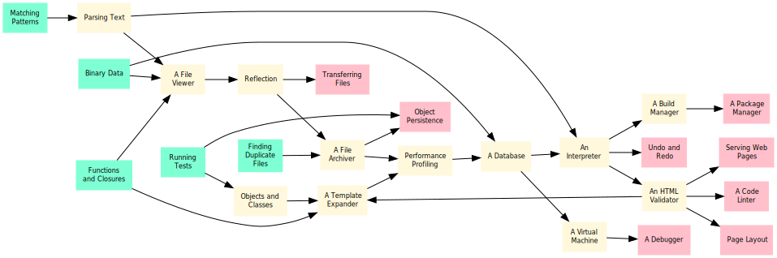

class: slide-title <p> <a href="https://third-bit.com/sd4ds/">Software Design for Data Scientists</a> </p> <h1>Introduction</h1> <div class="bottom"> <a href="../">chapter</a> </div> --- ## The Problem - Most data scientists are self-taught programmers - Often know they have gaps in their knowledge - And other gaps they don't even know about --- ## Complexity - One of those gaps is software design - A large program is more than just a dozen small programs - Most programming language features exist to manage complexity <figure> <img src="../complexity.svg" alt="Complexity and size"/> </figure> --- ## How to Learn Design - Best way to learn design is to analyze, critique, and recapitulate examples - These lessons use small versions of programming tools as examples - Generally accessible to people who are programming - Introduce some fundamental ideas in computer science - People who know how tools work are (hopefully) more likely to use them well --- ## Audience - Maya has a master's degree in genomics - Knows enough Python to analyze data from her experiments - But is struggling to write code that other people (including her future self) can use - These lessons will teach her how to design, build, and test large programs in less time and with less pain --- ## Prerequisites - Write Python programs using lists, loops, conditionals, dictionaries, and functions - Puzzle your way through Python programs that use classes and exceptions - Run basic Unix shell commands like `ls` and `mkdir` - Read and write a little bit of HTML - Use Git to save and share files --- class: aside ## In Addition - Yim teaches two college courses on web programming - They are frustrated that so many books talk about details but not about design and use examples that their students can't relate to - This material will give them material they can use in class and starting points for course projects --- ## The Big Ideas - Source code is just text. - A program in memory is just a data structure. - We can control and inspect programs while they are running. - A week of hard work can sometimes save us an hour of thought. --- ## Usage - Written material: [Creative Commons - Attribution - NonCommercial 4.0 International license][cc_by_nc] (CC-BY-NC-4.0) - Code: [Hippocratic License][hippocratic_license] - Source available in [our Git repository][book_repo] - Can all be read on [our website][book_site] --- ## The Author [**Greg Wilson**](https://third-bit.com/) has worked in industry and academia for 40 years, and is the author, co-author, or editor of over a dozen previous books. He was the co-founder and first Executive Director of Software Carpentry and received ACM SIGSOFT's Influential Educator Award in 2020. <div class="center"> <img src="gvwilson-gage-2019.png" alt="Greg Wilson" width="25%"> </div> --- ## Dedication <div class="center"> <em> This one's for Mike and Jon: <br> I'm glad you always found time to chat. </em> </div> --- class: summary ## Summary <figure class="fullwidth">  </figure> [academic_prototyping]: https://www.fuzzingbook.org/html/AcademicPrototyping.html [aosa]: https://aosabook.org/ [beautiful_soup]: https://beautiful-soup-4.readthedocs.io/ [birthday_problem]: https://en.wikipedia.org/wiki/Birthday_problem [black]: https://black.readthedocs.io/ [book_repo]: https://github.com/gvwilson/sd4ds/ [book_site]: https://third-bit.com/sd4ds/ [browser_engine_tutorial]: https://limpet.net/mbrubeck/2014/08/08/toy-layout-engine-1.html [browser_engineering]: https://browser.engineering/ [brubeck_matt]: https://limpet.net/mbrubeck/ [cc_by_nc]: https://creativecommons.org/licenses/by-nc/4.0/ [cc_by_nc_legal]: https://creativecommons.org/licenses/by-nc/4.0/legalcode [clarkes_laws]: https://en.wikipedia.org/wiki/Clarke%27s_three_laws [contributor_covenant]: https://www.contributor-covenant.org/ [cook_mary_rose]: https://maryrosecook.com/ [crafting_interpreters]: https://craftinginterpreters.com/ [ctan]: https://www.ctan.org/ [cypress]: https://www.cypress.io/ [db_tutorial]: https://cstack.github.io/db_tutorial/ [dresser_christopher]: https://en.wikipedia.org/wiki/Christopher_Dresser [ejs]: https://ejs.co/ [email]: mailto:gvwilson@third-bit.com [eniac_programmers]: http://eniacprogrammers.org/ [ethical_source]: https://ethicalsource.dev [evans_julia]: https://jvns.ca/ [evans_zines]: https://wizardzines.com/ [expect]: https://en.wikipedia.org/wiki/Expect [flake8]: https://flake8.pycqa.org/ [git]: https://git-scm.com/ [git_man_page_generator]: https://git-man-page-generator.lokaltog.net/ [gitlet]: http://gitlet.maryrosecook.com/ [glosario]: https://glosario.carpentries.org/ [gnu_make]: https://www.gnu.org/software/make/ [gutenberg]: https://www.gutenberg.org/ [harrelson_chris]: https://twitter.com/chrishtr [hippocratic_license]: https://firstdonoharm.dev/ [hoye_mike]: http://exple.tive.org/blarg/ [html5_data_attributes]: https://developer.mozilla.org/en-US/docs/Learn/HTML/Howto/Use_data_attributes [human_resource_machine]: https://tomorrowcorporation.com/humanresourcemachine [isort]: https://pycqa.github.io/isort/ [ivy]: https://www.dmulholl.com/docs/ivy/main/ [jekyll]: https://jekyllrb.com/ [json_schema]: https://json-schema.org/ [kilo_editor]: https://viewsourcecode.org/snaptoken/kilo/index.html [latex]: https://www.latex-project.org/ [loewy_raymond]: https://en.wikipedia.org/wiki/Raymond_Loewy [lorgat_editor]: https://github.com/seem/editor [lorgat_tutorial]: https://wasimlorgat.com/posts/editor.html [lorgat_wasim]: https://wasimlorgat.com/ [marthas_rules]: https://journals.sagepub.com/doi/10.1177/088610998600100206 [nano]: https://www.nano-editor.org/ [nison_mael]: https://arcanis.github.io/ [nystrom_bob]: http://journal.stuffwithstuff.com/ [package_manager_tutorial]: https://classic.yarnpkg.com/blog/2017/07/11/lets-dev-a-package-manager/ [panchekha_pavel]: https://pavpanchekha.com/ [pexpect]: https://pexpect.readthedocs.io/ [php]: https://www.php.net/ [picosat]: http://fmv.jku.at/picosat/ [pip]: https://pip.pypa.io/ [programming_tools]: https://en.wikipedia.org/wiki/Programming_tool [punching_holes]: http://exple.tive.org/blarg/2020/11/26/punching-holes/ [py_array]: https://docs.python.org/3/library/array.html [py_ast]: https://docs.python.org/3/library/ast.html [py_chainmap]: https://docs.python.org/3/library/collections.html#collections.ChainMap [py_cprofile]: https://docs.python.org/3/library/profile.html [py_curses]: https://docs.python.org/3/library/curses.html [py_fractions]: https://docs.python.org/3/library/fractions.html [py_glob]: https://docs.python.org/3/library/glob.html [py_hashlib]: https://docs.python.org/3/library/hashlib.html [py_inspect]: https://docs.python.org/3/library/inspect.html [py_io]: https://docs.python.org/3/library/io.html [py_itertools]: https://docs.python.org/3/library/itertools.html [py_json]: https://docs.python.org/3/library/json.html [py_jsonschema]: https://python-jsonschema.readthedocs.io/ [py_mimetypes]: https://docs.python.org/3/library/mimetypes.html [py_pickle]: https://docs.python.org/3/library/pickle.html [py_property]: https://docs.python.org/3/library/functions.html#property [py_semver]: https://pypi.org/project/semantic-version/ [py_struct]: https://docs.python.org/3/library/struct.html [py_textwrap]: https://docs.python.org/3/library/textwrap.html [py_urlparse]: https://docs.python.org/3/library/urllib.parse.html [pyfakefs]: https://pytest-pyfakefs.readthedocs.io/ [pytest]: https://docs.pytest.org/ [pytest_approx]: https://docs.pytest.org/en/4.6.x/reference.html#pytest-approx [python]: https://www.python.org/ [reim_michael]: https://elderlinux.org/ [requests]: https://requests.readthedocs.io/ [ruten_paige]: https://viewsourcecode.org/ [selenium]: https://www.selenium.dev/ [semver_spec]: https://semver.org/ [sinel_joseph]: https://en.wikipedia.org/wiki/Joseph_Claude_Sinel [snakemake]: https://snakemake.readthedocs.io/ [sqlite]: https://sqlite.org/ [stack_connor]: https://connorstack.com/ [svg_screenshot]: https://chrome.google.com/webstore/detail/svg-screenshot/nfakpcpmhhilkdpphcjgnokknpbpdllg [t3_personas]: https://teachtogether.tech/en/index.html#s:process-personas [textualize_fraction]: https://www.textualize.io/blog/posts/7-things-about-terminals [udhr]: https://www.un.org/en/universal-declaration-human-rights/ [ungc]: https://www.unglobalcompact.org/what-is-gc/mission/principles [unicode]: https://www.unicode.org/ [unix_glob]: https://en.wikipedia.org/wiki/Glob_(programming) [unix_packaging]: https://eerielinux.wordpress.com/2017/08/15/the-history-of-nix-package-management/ [webaim_wave]: https://wave.webaim.org/ [write_yourself_a_git]: https://wyag.thb.lt/ [z3]: https://en.wikipedia.org/wiki/Z3_Theorem_Prover [zeller_andreas]: https://andreas-zeller.info/